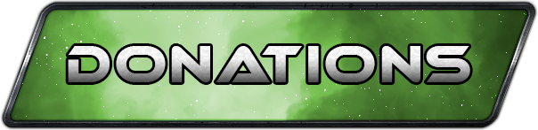

<div id="mission-main" class="d-flex flex-column flex-lg-row align-items-normal justify-content-around text-center">
    <div class="col-12 col-lg-12 d-flex flex-column align-items-center mb-3 mb-lg-0" id="Planete-center-bloc">
        <div class="container-fluid my-5">
            <h1 class="text-center">Veles</h1>
            <div class="text-center my-4">
                
            </div>
            <div class="my-4">
                <p class="w-100">Reaching the 250,000 TLM objective marks a decisive moment for Veles, as it Fully integrates the Planet to Planetary Game and triggers the activation of its lands. This step grants landowners full access to their territories. This advancement represents an opportunity for the inhabitants of Veles to actively participate to Planetary Defense.<br>TLM contributions are viewed as donations aimed at enhancing and supporting Veles. All collected TLM will be fully allocated to the planet that has been unlocked. </p>
            </div>
            <div class="progress w-50 mx-auto my-4">
            <div class="progress-bar" role="progressbar" style="width: 0%;" id="progressBar">
                <span id="progressText"></span>
            </div>
            </div>
            <div id="balance-info" class="text-center my-4"></div>
            <div class="mb-3 mx-auto w-50">
                <input type="number" class="form-control" placeholder="Donations TLM" id="filter-input" required>
            </div>
            <div class="text-center my-4">
                
            </div>
          <h3>Hall of Fame</h3>
          <div id="donationstop"></div>
        </div>
    </div>
</div>